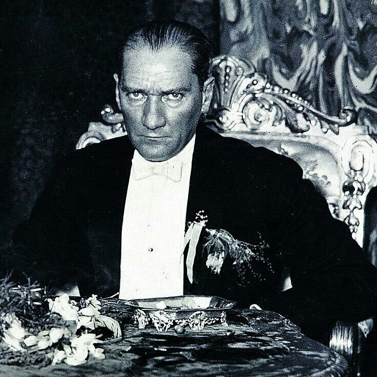
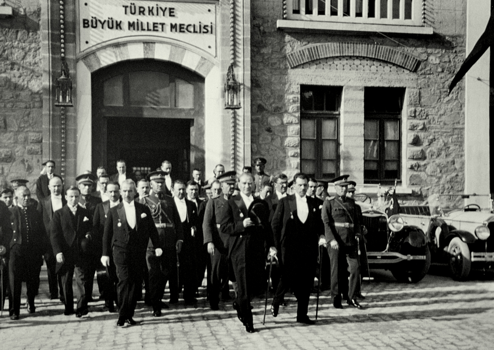
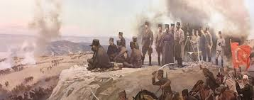

Türk Kurtuluş Savaşı (1919-1923)
Türk Kurtuluş Savaşı, Birinci Dünya Savaşı'nın ardından Türk vatanının işgal edilmesine karşı Türk milletinin verdiği bağımsızlık mücadelesidir. Mustafa Kemal Atatürk'ün önderliğinde başlayan bu mücadele, Türkiye Cumhuriyeti'nin kuruluşuyla sonuçlanmıştır.
Önemli Olaylar
19 Mayıs 1919
Mustafa Kemal'in Samsun'a çıkışı ve Millî Mücadele'nin başlangıcı
22 Haziran 1919
Amasya Genelgesi'nin yayınlanması
23 Temmuz - 7 Ağustos 1919
Erzurum Kongresi
4-11 Eylül 1919
Sivas Kongresi
23 Nisan 1920
Türkiye Büyük Millet Meclisi'nin açılışı
26 Ağustos - 9 Eylül 1922
Büyük Taarruz ve İzmir'in kurtuluşu
24 Temmuz 1923
Lozan Barış Antlaşması'nın imzalanması
29 Ekim 1923
Türkiye Cumhuriyeti'nin ilanı
Kurtuluş Savaşı'nın Liderleri

Mustafa Kemal Atatürk
Türk Kurtuluş Savaşı'nın Başkomutanı ve Türkiye Cumhuriyeti'nin kurucusu.

İsmet İnönü
Batı Cephesi Komutanı, Lozan görüşmelerinde Türk heyetinin başkanı.

Kazım Karabekir
Doğu Cephesi Komutanı, Ermeni kuvvetlerine karşı kazanılan zaferin mimarı.
Fotoğraf Galerisi




Kaynaklar ve Önerilen Okumalar
- Nutuk - Mustafa Kemal Atatürk
- Türk İstiklal Harbi - Genelkurmay Başkanlığı
- Kurtuluş Savaşı'nda İç Politika - Bülent Tanör
- Türk Kurtuluş Savaşı ve Dış Politika - Salahi R. Sonyel
- Milli Mücadele Tarihi - Şerafettin Turan